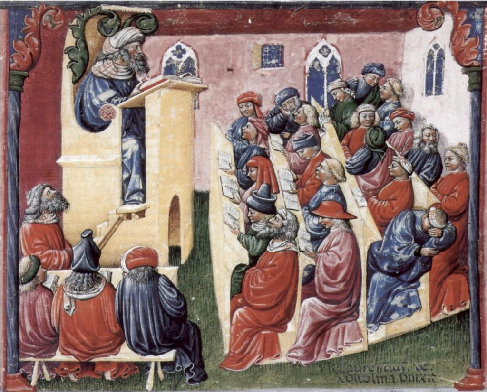

3.3 Aulas expositivas transmissivas: aprender ouvindo


3.3.1 Definição
[Aulas expositivas] são exposições mais ou menos contínuas de um palestrante que deseja que o público aprenda algo.”
Bligh, 2000
Esta definição específica é importante, pois exclui contextos em que uma aula é deliberadamente planejada para ser interrompida por perguntas ou discussões entre professores e estudantes. Essa forma de aula mais interativa será discutida na próxima seção (Capítulo 3, Seção 4).
3.3.2 As origens da aula expositiva
As aulas transmissivas remontam aos tempos da Grécia e Roma antigas, e certamente desde pelo menos o início da universidade europeia, no século XIII. O termo “lecture” (aula expositiva) vem do latim e significa leitura. No século XIII, a maioria dos livros era extremamente rara. Eram cuidadosamente produzidos e ilustrados à mão por monges, muitas vezes a partir de fragmentos ou coleções de rolos de pergaminho anteriores, valiosos e raríssimos dos tempos gregos ou romanos, ou traduzidos de fontes árabes, já que muita documentação foi destruída na Europa durante a Idade das Trevas que se seguiu à queda do Império Romano. Como resultado, uma universidade frequentemente possuía apenas uma cópia de um livro, e este podia ser o único exemplar disponível no mundo. A biblioteca e o seu acervo tornaram-se cruciais para a reputação de uma universidade, e os professores precisavam pegar o único texto emprestado da biblioteca e ler literalmente para os estudantes, que anotavam sua própria versão da exposição.
As aulas expositivas pertencem a uma tradição oral de aprendizagem ainda mais longa, na qual o conhecimento é transmitido oralmente de geração em geração. Nesses contextos, a precisão e a autoridade (ou o poder de controlar o acesso ao conhecimento) são críticas para que o conhecimento “aceito” seja transmitido com sucesso. Assim, a memória precisa, a repetição e a referência a fontes autorizadas tornam-se extremamente importantes em termos de validação da informação transmitida. As grandes sagas dos antigos gregos e, muito mais tarde, dos vikings, são exemplos do poder da transmissão oral do conhecimento, que continua até hoje por meio dos mitos e lendas de muitas comunidades indígenas.


Artista: Laurentius de Voltolina;
Liber ethicorum des Henricus de Alemannia; Kupferstichkabinett SMPK, Berlin/Staatliche Museen Preussischer Kulturbesitz, Min. 1233

Esta ilustração de um manuscrito do século XIII mostra Henrique da Alemanha ministrando uma aula para estudantes universitários em Bolonha, Itália, em 1233. O que chama a atenção é como todo o contexto é semelhante às aulas de hoje, com estudantes fazendo anotações, alguns conversando no fundo e um claramente dormindo. Certamente, se Rip Van Winkle acordasse em um auditório moderno após 800 anos de sono, saberia exatamente onde estava e o que estava acontecendo.
No entanto, o formato da aula expositiva é questionado há muitos anos. Samuel Johnson (1709-1784), há mais de 200 anos, disse o seguinte sobre as aulas:
‘Hoje em dia as pessoas... adquiriram a estranha opinião de que tudo deve ser ensinado por meio de aulas. Ora, não vejo como as aulas possam fazer tanto bem quanto ler os livros de onde foram extraídas... As aulas já foram úteis, mas agora, quando todos sabem ler e os livros são tão numerosos, as aulas são desnecessárias.’
Boswell, 1791
O que é notável é que, mesmo após a invenção da imprensa, do rádio, da televisão e da internet, a aula transmissiva, caracterizada pelo professor autoritativo falando para um grupo de estudantes, ainda permanece como a metodologia dominante de ensino em muitas instituições, mesmo na era digital, onde a informação está disponível ao clique de um mouse. Poder-se-ia argumentar que algo que durou tanto tempo deve ter algum valor. Por outro lado, precisamos questionar se a aula transmissiva continua a ser o meio de ensino mais adequado, diante de todas as mudanças ocorridas em anos recentes e, em particular, considerando os tipos de conhecimentos e competências exigidos na era digital.
3.3.3 O que a pesquisa nos diz sobre a eficácia das aulas expositivas?
Independentemente do que você pense sobre a opinião de Samuel Johnson, houve de fato uma grande quantidade de pesquisas sobre a eficácia das aulas expositivas, remontando à década de 1960 e continuando até hoje. A análise mais autorizada da pesquisa sobre a eficácia das aulas continua sendo a de Bligh (2000). Ele resumiu uma ampla gama de metanálises e estudos sobre a eficácia das aulas expositivas em comparação com outros métodos de ensino e encontrou resultados consistentes:
- a aula expositiva é tão eficaz quanto outros métodos para transmitir informações (o corolário, naturalmente, é que outros métodos — como vídeo, leitura, estudo independente ou Wikipedia — são tão eficazes quanto a aula expositiva para transmitir informações);
- a maioria das aulas expositivas não é tão eficaz quanto a discussão para promover o pensamento;
- as aulas expositivas são geralmente ineficazes para mudar atitudes ou valores, ou para despertar o interesse por um assunto;
- as aulas expositivas são relativamente ineficazes para o ensino de habilidades comportamentais.
Bligh também examinou pesquisas sobre a atenção do estudante, memorização e motivação, e concluiu (p. 56):
‘Vemos evidências... mais uma vez para supor que as aulas expositivas não devem durar mais de vinte a trinta minutos — pelo menos sem técnicas para variar o estímulo.‘
Esses estudos mostraram que, para compreender, analisar, aplicar e reter a informação na memória de longo prazo, o aprendiz precisa se envolver ativamente com o material. Para que uma aula expositiva seja eficaz, ela deve incluir atividades que forcem o estudante a manipular mentalmente a informação. Muitos docentes, é claro, fazem isso, parando e pedindo comentários ou perguntas ao longo da exposição — mas muitos não o fazem.
Novamente, embora esses resultados estejam disponíveis há muito tempo, e os vídeos do YouTube durem hoje aproximadamente oito minutos e as palestras do TED no máximo 20 minutos, o ensino em muitas instituições educacionais ainda está estruturado em torno de uma sessão de aula padrão de 50 minutos ou mais, com, se os estudantes tiverem sorte, alguns minutos no final para perguntas ou discussão. Existem duas conclusões importantes a partir da pesquisa:
- mesmo para o único propósito para o qual as aulas expositivas podem ser eficazes — a transmissão de informações —, a aula de 50 minutos precisa ser bem organizada, com oportunidades frequentes para perguntas e discussões dos estudantes (Bligh apresenta excelentes sugestões sobre como fazer isso em seu livro);
- para todas as outras atividades importantes de aprendizagem, como o desenvolvimento do pensamento crítico, compreensão profunda e aplicação do conhecimento — as competências necessárias na era digital —, as aulas expositivas são ineficazes. Outras formas de ensino e aprendizagem — como oportunidades de discussão e atividades para os estudantes — são necessárias.
3.3.4 A nova tecnologia torna as aulas expositivas mais relevantes?
Ao longo dos anos, as instituições fizeram investimentos maciços na incorporação de tecnologias para apoiar as aulas expositivas. Apresentações de PowerPoint, múltiplos projetores e telas, controles de votação (clickers) para registrar as respostas dos estudantes, e até canais de debate paralelo no Twitter, permitindo que os estudantes comentem sobre uma palestra — ou, mais frequentemente, sobre o palestrante — em tempo real (certamente a pior forma de tortura para um orador), já foram testados. Solicitou-se que os estudantes levassem tablets ou notebooks para a aula, e as universidades, em particular, investiram milhões de dólares em auditórios modernos. No entanto, tudo isso é apenas maquiagem. A essência de uma aula expositiva continua sendo a transmissão de informações, as quais agora estão facilmente e, na maioria dos casos, gratuitamente disponíveis em outras mídias e em formatos mais amigáveis para o aprendiz.
Trabalhei em uma faculdade onde, em um determinado programa, todos os estudantes precisavam levar notebooks para a aula. Pelo menos nessas aulas, havia algumas atividades práticas relacionadas à matéria que exigiam o uso dos computadores durante o horário de aula. No entanto, na maioria das aulas isso consumia menos de 25% do tempo. Na maior parte do tempo restante, os estudantes apenas ouviam passivamente e, por isso, usavam seus computadores para outras atividades, principalmente não acadêmicas, em especial jogar pôquer on-line.
Os docentes costumam reclamar do uso de tecnologias como celulares ou tablets para multitarefas não acadêmicas em sala de aula, mas isso perde o foco do problema. Se a maioria dos estudantes possui celulares ou notebooks, por que eles ainda precisam ir presencialmente a um auditório? Por que não podem assistir a um podcast ou a um vídeo da aula? Em segundo lugar, se eles estão presentes, por que os professores não exigem que utilizem seus celulares, tablets ou notebooks para fins de estudo, como busca de fontes? Por que não dividir os estudantes em pequenos grupos e solicitar que façam uma pesquisa on-line e tragam respostas em grupo para compartilhar com a classe? Se as aulas expositivas continuarem a ser oferecidas, o objetivo deve ser torná-las envolventes por si mesmas, para que os estudantes não se distraiam com atividades on-line não acadêmicas.
3.3.5 Não há então espaço para aulas expositivas na era digital?
As aulas expositivas, contudo, ainda têm sua utilidade. Um exemplo foi uma aula inaugural a que assisti de um professor pesquisador recém-nomeado. Nessa aula, o professor resumiu todas as pesquisas que ele e sua equipe haviam realizado, resultando em tratamentos para vários tipos de câncer e outras doenças. Era uma aula pública, então ele precisava atender não apenas a outros pesquisadores de ponta da área, mas também a um público leigo, muitas vezes sem formação científica. Ele conseguiu isso utilizando ótimos recursos visuais e analogias. A aula foi seguida por um pequeno coquetel de vinho e queijo para os presentes. A exposição funcionou por vários motivos:
- em primeiro lugar, foi uma ocasião comemorativa que reuniu familiares, colegas e amigos;
- segundo, foi uma oportunidade de sintetizar quase 20 anos de pesquisa em uma única narrativa ou história coerente;
- terceiro, a apresentação foi bem apoiada pelo uso adequado de gráficos e vídeos;
- por fim, ele dedicou muito esforço à preparação desta aula e pensou em quem estaria no público — muito mais preparação do que seria o caso se fosse apenas uma de muitas aulas de uma disciplina convencional.
McKeachie e Svinicki (2006, p. 58) acreditam que a aula expositiva é melhor utilizada para:
- apresentar material atualizado que não pode ser encontrado em uma única fonte;
- sintetizar materiais encontrados em diversas fontes;
- adaptar o material aos interesses de um grupo específico;
- ajudar inicialmente os estudantes a descobrir conceitos, princípios ou ideias fundamentais;
- modelar o pensamento de um especialista.
O último ponto é importante. Os docentes costumam argumentar que o real valor de uma aula expositiva é fornecer um modelo de como o professor, como especialista, aborda um tópico ou problema. Assim, o ponto importante não é a transmissão de conteúdo (fatos, princípios, ideias), que os estudantes poderiam obter apenas lendo, mas a maneira especializada de pensar sobre o assunto. O problema com este argumento em favor das aulas expositivas é triplo:
- os estudantes raramente têm consciência de que esse é o objetivo da aula e, por isso, focam na memorização do conteúdo, em vez da modelagem do pensamento do especialista;
- os próprios docentes não são explícitos sobre como estão fazendo a modelagem (ou deixam de oferecer outras formas pelas quais a modelagem poderia ser usada, para que os estudantes comparem e contrastem);
- os estudantes não praticam essa habilidade, mesmo que tenham consciência da modelagem.
Mais importante ainda, olhando para as sugestões de McKeachie e Svinicki, não seria melhor que os próprios estudantes, e não o professor, realizassem essas atividades na era digital?
Portanto, sim, existem algumas ocasiões em que as aulas expositivas funcionam muito bem. Mas na era digital elas não devem ser o modelo padrão para o ensino regular. Existem maneiras muito melhores de ensinar que resultarão em uma aprendizagem mais eficaz ao longo de um curso ou programa.
3.3.6 Por que as aulas expositivas ainda são a principal forma de entrega educacional?
Diante de todo o exposto, é preciso oferecer alguma explicação para a persistência da aula expositiva no século XXI. Aqui estão algumas sugestões:
- de fato, em muitas áreas da educação, a aula expositiva foi substituída, particularmente em muitas escolas de ensino fundamental;
- inércia arquitetônica: as instituições fizeram um investimento gigantesco em instalações que apoiam o modelo de aula expositiva. O que fazer com todo esse espaço se não for utilizado? (Como disse Winston Churchill, “Nós moldamos nossos edifícios e nossos edifícios nos moldam”);
- na América do Norte, a unidade Carnegie de ensino baseia-se na noção de uma hora por semana de tempo de aula por crédito ao longo de um período de 13 semanas. É fácil, então, dividir um curso de três créditos em 39 aulas expositivas de uma hora, nas quais o currículo deve ser abordado. É com base nisso que a carga docente e os recursos são decididos;
- os docentes do ensino superior não conhecem outro modelo de ensino. Este é o modelo ao qual estão acostumados e, como a contratação se baseia na formação em pesquisa ou na experiência profissional, e não em qualificações didáticas, eles carecem de conhecimento sobre como os estudantes aprendem ou de confiança e experiência em outros métodos de ensino;
- muitos especialistas preferem a tradição oral de ensino e aprendizagem porque ela valoriza o seu status de especialista e fonte de conhecimento; dispor de uma hora do tempo de outras pessoas para ouvir suas ideias sem interrupções significativas é muito satisfatório em termos pessoais (pelo menos para mim, quando estou ministrando uma aula);
- veja o Cenário C no início deste capítulo.
3.3.7 Existe futuro para as aulas expositivas na era digital?
Isso depende de quão longe no futuro se queira olhar. Dada a inércia do sistema, as aulas expositivas provavelmente ainda predominarão por mais dez anos, mas depois disso, na maioria das instituições, disciplinas baseadas em três aulas por semana durante 13 semanas terão desaparecido. Existem várias razões para isso:
- todo conteúdo pode ser facilmente digitalizado e disponibilizado sob demanda a um custo muito baixo (ver Capítulo 11);
- as instituições farão maior uso de vídeos dinâmicos (não cabeças falantes) para demonstrações, simulações, animações, etc. Assim, a maioria dos módulos de conteúdo será multimídia;
- terceiro, livros didáticos abertos incorporando componentes multimídia e atividades para os estudantes fornecerão o conteúdo, a organização e a interpretação que justificam a maioria das aulas expositivas;
- por fim, e de forma mais significativa, a prioridade do ensino terá mudado da transmissão e organização da informação para a gestão do conhecimento, onde os estudantes têm a responsabilidade de encontrar, analisar, avaliar, compartilhar e aplicar o conhecimento, sob a orientação de um especialista no assunto. A aprendizagem baseada em projetos, a aprendizagem colaborativa e a aprendizagem situada ou experiencial tornar-se-ão muito mais prevalentes. Além disso, muitos docentes preferirão usar o tempo que gastariam em uma série de aulas expositivas para fornecer apoio mais direto, individual e em grupo aos aprendizes, aproximando-os mais deles.
Isso não significa que as aulas expositivas desaparecerão por completo, mas serão eventos especiais, e provavelmente multimídia, entregues de forma síncrona e assíncrona. Eventos especiais podem incluir:
- o resumo de uma professora sobre sua pesquisa mais recente,
- a introdução a um curso,
- um ponto no meio de um curso para fazer um balanço e lidar com dificuldades comuns, ou
- o encerramento de um curso.
As aulas expositivas proporcionarão uma oportunidade para os docentes se fazerem conhecidos, transmitirem seus interesses e entusiasmo e motivarem os aprendizes, mas isso será apenas um componente, relativamente pequeno, mas importante, de uma experiência de aprendizagem muito mais ampla para os estudantes.
Para uma perspectiva diferente e informada sobre o papel e o futuro das aulas expositivas, consulte Christine Gross-Loh, 2016.
Referências
Bates, A. (1985) Broadcasting in Education: An Evaluation London: Constables
Bligh, D. (2000) What’s the Use of Lectures? San Francisco: Jossey-Bass
Boswell, J. (1791), The Life of Samuel Johnson, New York: Penguin Classics (editado por Hibbert, C., 1986)
Gross-Loh, C. (2016) Should colleges really eliminate the college lecture? The Atlantic, 14 de julho
McKeachie, W. and Svinicki, M. (2006) McKeachie’s Teaching Tips: Strategies, Research and Theory for College and University Teachers Boston/New York: Houghton Mifflin
Atividade 3.3 O futuro das aulas expositivas
1. Você concorda que as aulas expositivas estão mortas — ou em breve estarão?
2. Observe as competências necessárias na era digital descritas no Capítulo 1. Quais dessas competências as aulas expositivas poderiam ajudar a desenvolver? Elas precisariam ser replanejadas ou modificadas para isso e, se sim, como?
Para feedback sobre a segunda questão, clique no podcast abaixo:
Um elemento de áudio foi excluído desta versão do texto. Você pode ouvi-lo on-line aqui: https://pressbooks.bccampus.ca/teachinginadigitalagev2/?p=89
Referências
Bligh, D. (2000) What’s the Use of Lectures? San Francisco: Jossey-Bass
Boswell, J. (1791), The Life of Samuel Johnson, New York: Penguin Classics (editado por Hibbert, C., 1986)
Gross-Loh, C. (2016) Should colleges really eliminate the college lecture? The Atlantic, 14 de julho
McKeachie, W. and Svinicki, M. (2006) McKeachie’s Teaching Tips: Strategies, Research and Theory for College and University Teachers Boston/New York: Houghton Mifflin